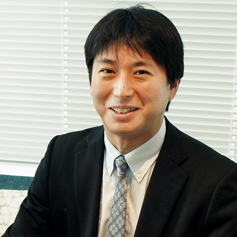

About
全体司会
國生 千代
NHK大阪放送局 リポーター
NHK札幌放送局でのリポーター経験をもとに、2018年4月から地元大阪の夕方ニュース番組「ニュースほっと関西」でのリポートや中継を担当。同年12月に担当した大阪・関西万博に関する中継でWAKAZOのみなさんと出会い、本日に至る。
inochi Gakusei Mirai Forum 2019 × mini WAKAZO Pavilion
2019年11月24日（日）
12:00-18:45 （11:00開場予定、情報交換会19:15-21:15）
堂島リバーフォーラム
1階HALL：フォーラム会場
4階GALLERY：mini WAKAZO Pavilion会場
Program
画像をクリックするとそれぞれのセクションの詳細（ページ内）に飛びます


『共に作る課題解決のその先の未来社会』
キングコング 西野 亮廣 氏 登壇！
2020年の東京五輪、2025年の大阪・関西万博と、これから日本が迎える
「今後100年で最も世界からの注目を浴びる５年間」。
そこで躍動し未来を作る立場である「若者」の在り方を、
私たちの世代のパイオニアである西野氏が語ります。
Special Talk
Keynote Speaker
西野 亮廣 氏
共に創る課題解決のその先の未来社会
2025年大阪・関西万博開催へ向けて2025年日本国際博覧会協会は、
2019年内にBIE総会へ「登録申請書」を提出することを目指している中、
大阪府も「受動喫煙0%」「2025本の桜の木」などをレガシーとして残そうと動いています。
しかし、若者とともに作り上げるレガシーはまだ決まっていません。
そこで、WAKAZ0に集まった若者のアイデアを元に、「WAKAZO版 登録申請書」を要人に提出し、
「若者が万博を通して大阪・関西から世界に残していきたいレガシーとその実現」を提言します。
『共に挑むヘルスケアの課題解決』
高校生が4ヶ月間、「私たちが減らす、心臓突然死」というテーマのもとで課題解決に取り組むinochi学生フォーラム2019。
7.5分に1人が心臓突然死で亡くなっている現代の日本で、若者がテクノロジーとコミュニティの力を信じて、ヘルスケアの一大問題に立ち向かいます。
当日は、コンペティションを勝ち抜いたチームによるプレゼンテーションが行われます。
Plenary Talk
Guest Speaker
吉藤 オリィ氏
株式会社オリィ研究所
代表取締役社長

Facilitator
鈴木 寛 先生
東京大学 教授 / 慶應義塾大学 教授
一般社団法人inochi 未来プロジェクト理事
Competition
Presenters


Judges


『世代を超えて共に描くinochiの都市中之島』
中之島スマートシティー構想に向けて、中之島の地にどのような変革がなされるべきか。
課題解決を行うアントレプレナーたちが、
それぞれが目指す未来の中之島の姿について語ります。
加えて、2025年に行われる大阪・関西万博に向けて、関西や日本に求められているものについてもフォーカスをあて、
万博開催までの6年間で関西にあるべき社会設計を語ります。
（内容は一部変更となることがございます）
Keynote Speech
Keynote Speaker
山中 伸弥 教授
京都大学iPS細胞研究所 所長 教授※ビデオメッセージでの登壇
Panel Discussion
Moderator
田邉 翼
inochi学生プロジェクト2019 代表
大阪大学医学部医学科2年
Panelists


ほか
『共に創ろう、課題解決のその先の未来社会』—大阪・関西万博を通した若者の実験場（WAKAZO Pavilion）の実現へ —
WAKAZO は、2025年大阪・関西万博において若者の共創によるパビリオン「WAKAZO Pavilion」を実現するため
誘致段階から中心となって精力的に活動してきました。
2018年11月に大阪・関西万博開催決定が決まり、今年度は本格的に WAKAZO Pavilion 実現に向けて歩みだしています。
今年度、「2025 年万博若者会議」を全国 4 都市で開催し、「未来の共創」を担う若者たちが200人集いました。
個々人がいま取り組んでいるプロジェクトを提示しながら、「いのちとはなにか」を議論することを通して
共創したい「2050 年」を考えてきました。
その成果を、「2050年のいのちをアートする」というテーマのもと、「mini WAKAZO Pavilion」として実装します。
エピジェネティクスをヒントにデザインされた空間の中で、「生まれる」「死ぬ」「生きがいを持って暮らす」「世代を越えて受け継ぐ」の4つのテーマをもとに
出展者と来場者が相互にコミュニケーションをしながら、2030年の未来へ向けた課題解決、さらに2050年の未来へ向けたビジョン創出を目指し
若者が実験を繰り返す空間です。
Pavilion

Schedule
12:00 - 12:10
オープニング
12:10 - 12:50
特別講演
Keynote Presentation
『共に創る課題解決のその先に』
12:50 - 13:05
WAKAZO Pavilion Ceremony
13:10 - 16:20
inochi Gakusei Forum 2019
『私たちが減らす。心臓突然死』
16:30 - 18:30
inochi Mirai Forum 2019
『世代を超えて共に描くinochiの都市中之島』
18:30 - 18:45
クロージング
19:15 - 21:15
情報交換会
ウォーターフロント堂島（120名限定）
Contact
ご意見・ご質問等ございましたら、下記メールアドレスまたはSNSのいずれかより、
お気軽にお問い合わせくださいませ。
Organizers
後援
大阪市
一般社団法人2025年日本国際博覧会協会
一般社団法人関西経済同友会
公益財団法人大阪産業局
大阪商工会議所
一般財団法人 AED財団
特定非営利活動法人大阪ライフサポート協会
大阪大学大学院医学系研究科・医学部附属病院 産学連携・クロスイノベーションイニシアティブ
一般社団法人健康医療クロスイノベーションラボ
一般社団法人ジャパンバイオデザイン協会
関西SDGsプラットフォーム
* 登壇者は一部のみを抜粋しております。
* 内容は予告なく変更されることがございます。